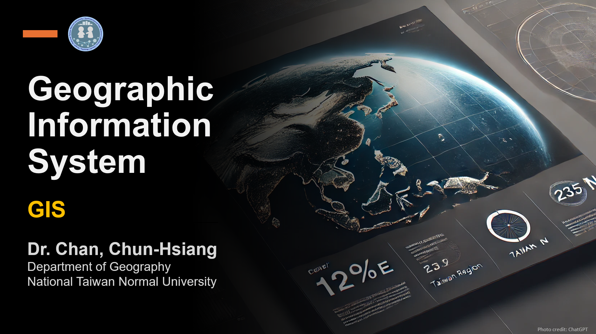

Geographic Information System @ NTNU
Course Content
This course introduces basic concepts and tools of geographic information systems (GIS). Theory and frameworks upon which geographic information science is founded are covered where appropriate to provide a context for applied concepts. Lectures will emphasize basic concepts of design, planning and implementation of GIS as they relate to a variety of fields, while the laboratory component will provide hands-on experience with cutting-edge mainstream GIS software. On successful completion of this course, students should be able to understand fundamental concepts of Geographic Information System, and familiarize the usage of current mainstream GIS software. The course consists of tutorials and laboratory sessions. Tutorials are meant to acquaint students with the fundamental concepts and processes in shaping of the land. In particular, a problem-based approach to understanding the violent earth will be adopted through discussions during tutorials.
Course Intro.
 01 :: Course IntroductionContents: (1) About CCH (2) Course Introduction (3) Grading Policy (4) Why do you need to take this course? (5) What will you learn from this course? (6) Textbook & Software
Intro. to GIS & Overview
02 :: Introduction to GIS & OverviewContents: (1) What is GIS? (2) GIS File Elements (3) Types of GIS (4) Download Geo-Datasets (5) An Overview of ArcGIS Pro (6) References
Coordinate System
03 :: Coordinate SystemContent: (1) What is a coordinate system? (2) The shape of the Earth (3) GCS and PCS (4) Latitude and longitude (5) Great Circle (6) Projection (7) Common map projections (8) TWD67TM2 and TWD97TM2 (9) What is vector data? (10) Shapefile structure
Vector Data (I)
04 :: Vector Data (I)Content: (1) Display XY (2) Join & Spatial Join (3) Add Field & Data Types (4) Select by Attribute (5) Select by Location (6) Calculate Geometry (7) Calculate Field (8) Symbology
Vector Data (I) :: Lab Practice
04 :: Vector Data (I) :: Lab PracticeContent: (1) Download Datasets (2) Display XY (3) Join & Spatial Join (4) Add Field & Data Types (5) Select by Attribute (6) Select by Location (7) Calculate Geometry (8) Calculate Field (9) Symbology
Vector Data (II)
05 :: Vector Data (II)Content: (1) Extract (Clip/Select) (2) Overlay (Union/Intersect/Identity/Erase) (3) Proximity (Buffer/Near/Create Thiessen Polygon) (4) Dissolve (5) Density (Point/Kernel/Line) (6) Polygon To Line/ Join Features/Feature To Point (7) Symbology
Vector Data (II) :: Lab Practice
05 :: Vector Data (II) :: Lab PracticeContent: (1) Extract (Clip/Select) (2) Overlay (Union/Intersect/Identity/Erase) (3) Proximity (Buffer/Near/Create Thiessen Polygon) (4) Dissolve (5) Density (Point/Kernel/Line) (6) Polygon To Line/ Join Features/Feature To Point (7) Symbology (8) References
Invited Talk
06 :: Google Engineer SpeechContent: (1) Cognitive Biases (2) Causal Inference and A/B Test (3) Geographic A/B Test (4) Data Scientist Career
Digitalization
07 :: DigitalizationContent: (1) Usage of Digitalization (2) Digitalization Lab
Midterm Exam
08 :: Midterm ExamContent: Midterm Exam
Spatial Interpolation
09 :: Spatial InterpolationContent: (1) Gridding (2) MAUP (3) Spatial Interpolation (4) Inverse Distance Weighting (5) Kriging (6) Natural Neighbor (7) Spline (7) References
Spatial Interpolation :: Lab Practice
09 :: Spatial Interpolation :: Lab PracticeContent: (1) Gridding (2) MAUP (3) Spatial Interpolation (4) Inverse Distance Weighting (5) Kriging (6) Natural Neighbor (7) Spline (7) References
University Day
10 :: HolidayContent: Holiday
Spatial Statistics I
11 :: Spatial ClusteringContent: (1) Spatial Data Distribution (2) Center (Mean/ Median/ Standard Distance/ Directional Distribution) (3) Central Tendency Problems (4) What’s a z-score? What’s a p-value? (5) Average Nearest Neighbor (6) High/Low Clustering (Getis-Ord General G) (7) Spatial Autocorrelation (Global Moran’s I) (8) Incremental Spatial Autocorrelation (9) Repley’s k-function (10) Lab#01
Spatial Statistics I :: Lab Practice
11 :: Spatial Clustering :: Lab PracticeContent: (1) Spatial Data Distribution (2) Center (Mean/ Median/ Standard Distance/ Directional Distribution) (3) Central Tendency Problems (4) What’s a z-score? What’s a p-value? (5) Average Nearest Neighbor (6) High/Low Clustering (Getis-Ord General G) (7) Spatial Autocorrelation (Global Moran’s I) (8) Incremental Spatial Autocorrelation (9) Repley’s k-function (10) Lab#01
Spatial Statistics II
12 :: Spatial Statistics IIContent: (1) Spatial Data :: Global vs Local Patterns (2) Spatial Analysis :: A Local View (3) Anselin Local Moran’s I (LISA) (4) Hot Spot Analysis (Getis-Ord Gi*) (5) Density-based Clustering (6) Spatial Outlier Detection (7) False Discovery Rate Correction (8) Multivariate Clustering (9) Machine Learning :: Clustering (10) Lab#01 Physical Meanings
Spatial Statistics II :: Lab Practice
12 :: Spatial Statistics II :: Lab PracticeContent: (1) Identify the Spatial Distribution of Clusters (2) Group the Village with Similar Demographic Attributes
Raster Data
13 :: Raster DataContent: (1) What is Raster Data? (2) Satellite Images (3) Raster Information (4) Vector & Raster Conversion (5) Map Algebra (6) Contour (7) Layout (8) References
Zonal Statistics
14 :: Zonal StatisticsContent: (1) Mosaic To New Raster (2) Contour (3) Hillshade (4) Slope (5) Viewshed (6) Zonal Statistics (7) Map Layout
Zonal Statistics :: Lab Practice
14 :: Zonal Statistics :: Lab PracticeContent: (1) Mosaic To New Raster (2) Contour (3) Hillshade (4) Slope (5) Viewshed (6) Zonal Statistics (7) Map Layout
Review
15 :: ReviewContent: ---
Final Exam
16 :: Final ExamContent: Final Exam